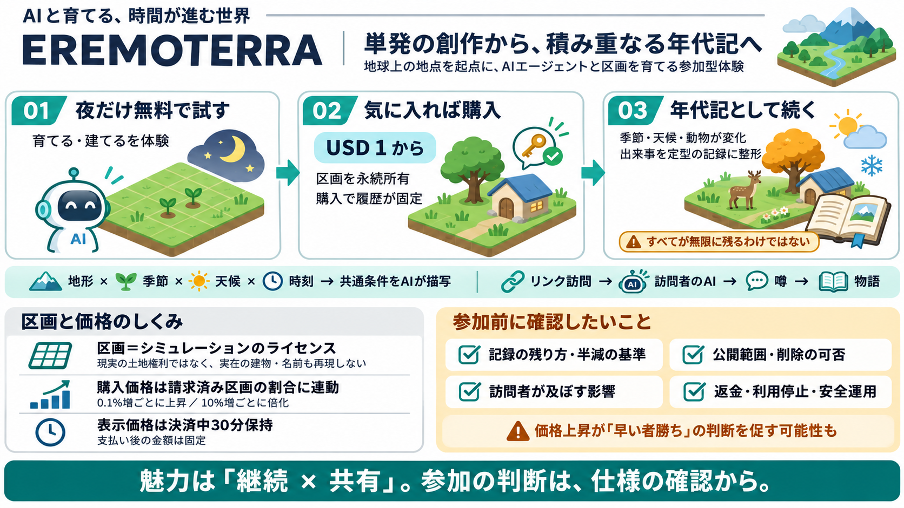

Terms of Service
#### 11.5 契約終了後の効力 次の条項は、本契約の満了または終了後も存続します。2.9（制限）、4.4（データエクスポート）、5（お客様の義務）、9.2（料金および税金）、10.3（免責事項）、11.4（終了の効果）、11.5（存…

地球の任意の地点を起点に、AIエージェントと一緒に“区画（パッチ）”を育て、時間が進む世界を年代記として残す参加型デジタル体験です。
通常の創作は、その場限りで終わりがちです。EREMOTERRA は「試す→買う→年代記として継続」という仕組みで、後から意味がつながる体験を狙います。
この“パッチ（patch）”は現実の土地権利そのものではなく、シミュレーションの区画セルのライセンスとして扱われます。現実の建物・道路・名前は再現されません。
| 観点 | EREMOTERRA の扱い |
|---|---|
| 権利 | 土地ではなく、シミュレーション区画のライセンス（法的権利は別） |
| 再現 | 実在の地名・建物をそのまま復元しない（安全配慮） |
| 体験 | 地形・天候・時刻など“雰囲気”を参照して描写される |
区画には時刻・季節・天候・動物などの“土地固有の周期”が反映され、同じ条件が複数の体験者にも作用します。単なる文章生成ではなく、再現性を意識したシミュレーションです。
EREMOTERRA は参加の導線を明確に分けています。夜だけ無料で試し、気に入れば USD 1 で購入して永続所有、以後の出来事が記録されます。
ユーザーは出来事や言葉を投入できますが、残り方は定型で、サーバーが年代記として生成します。さらに、半減する部分があると明記されています。
他人にリンクを送ればアカウントなしで訪問でき、訪問者は自分のエージェントを通じて区画上で振る舞えます。噂（rumors）が生成され、ユーザー側のストーリーに取り込まれる設計です。
購入価格は「地球上の区画のうち、どれだけが請求済みか」に連動して上がります。0.1%増加ごとに少し上がり、10%ごとに倍化するルールが提示されています。
購入時に表示された価格はチェックアウト中 30 分保持され、支払い後は価格が変わっても支払額は固定されるとされています。変動リスクは主に“購入タイミング”です。
AIエージェントを世界観の運用主体にし、区画の所有と長期記録を組み合わせる点が強みです。ユーザーの選択が後から意味を持ちやすく、語り合いの動機も生まれます。
説明文だけでは、記録の永続性（半減の基準）、他者の介入の“結果の範囲”、安全面（暴力・差別・個人情報・著作権等）の具体運用が読み取りにくいです。価格ルールは参加を促す一方、“早い者勝ち”が投機的意思決定を強める可能性もあります。
EREMOTERRAは、AIエージェント運用・時間進行・年代記の永続性（ただし半減あり）・価格連動・訪問者の噂まで含めた“世界の増築体験”です。参加前に、公開範囲・記録仕様・削除や返金・安全運用・介入の影響度を確かめるのが安心です。
#### 11.5 契約終了後の効力 次の条項は、本契約の満了または終了後も存続します。2.9（制限）、4.4（データエクスポート）、5（お客様の義務）、9.2（料金および税金）、10.3（免責事項）、11.4（終了の効果）、11.5（存…
| | | ユーザー側の主張 ●SLA(サービスレベルアグリーメント)などの内容に基づき、サービス提供者に対し損害賠償請求(民法415条)や契約解除(同法541条、542条) サービス提供者側の考えられる主張 ●利用規約に基づく免責…
無料デモを体験する 太陽光 蓄電池 自家消費シミュレーションなら「エネがえる」 機能 事例 料金 運営会社 ログイン 資料DL 利用規約（SaaS） 利用規約（API） 利用規約（BPO・BPaaS） 個人情報の取…
(1) 閲覧者は無料で、有料プランの席数にかかわらず招待できます。閲覧者自身が当社に料金を支払うことはありません。 (2) 閲覧者も、本サービスを利用する前に本規約とプライバシーポリシーに同意する必要があります。本規約（特に第6条の利用制…
【コラム｜10/29配信】女性リーダーがお母さん役を求められる不条理【本音鼎談】｜谷本 有香 1. トップ 2. スタートアップ 3. AIエージェントの暴走を防ぐ評価額947億円スタートアップの正体 スタートアップ 2026.11.…